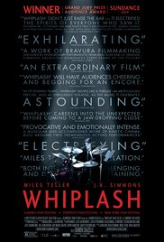

Whiplash

Genre: Drama
Release Date: 2014
Description
A promising young drummer enrolls at a cut-throat music conservatory where his dreams of greatness are mentored by an instructor who will stop at nothing to realize a student's potential.Andrew Neiman is a first-year jazz student at the prestigious Shaffer Conservatory in New York. He has been playing drums from a young age and aspires to become like Buddy Rich. Famed conductor Terence Fletcher discovers Andrew practicing in the music room and invites him into his studio band as the alternate for core drummer Carl Tanner. Fletcher is strict and abusive toward his students, mocking and insulting them; when the band rehearses the Hank Levy piece "Whiplash" and Andrew struggles to keep the tempo, Fletcher hurls a chair at him, slaps him and berates him in front of the class.
Lord of the Rings

Genre: Fantasy, Drama
Release Date: 2001
Description
A meek Hobbit from the Shire and eight companions set out on a journey to destroy the powerful One Ring and save Middle Earth from the Dark Lord Sauron. The Lord of the Rings is a film series consisting of three high fantasy adventure films directed by Peter Jackson. They are based on the novel The Lord of the Rings by J. R. R. Tolkien. The films are subtitled The Fellowship of the Ring (2001), The Two Towers (2002) and The Return of the King (2003). They are a New Zealand-American venture produced by WingNut Films and The Saul Zaentz Company and distributed by New Line Cinema.
John Wick

Genre: Action, Drama
Release Date: 2014
Description
After John Wick loses his beloved wife Helen to a terminal illness, he receives a beagle puppy named Daisy, per Helen's instructions, to help him cope with her death. He connects with the puppy and they spend their day driving around in his vintage 1969 Ford Mustang Mach 1. At a gas station, he encounters a trio of Russian gangsters whose leader, Iosef Tarasov, insists on buying his car, but John refuses to sell it. The mobsters follow John to his home that night, knock him unconscious, steal his car, and kill Daisy.
Interstellar

Genre: Action, Drama, Science fiction
Release Date: 2014
Description
Sometime in the 21st century, a series of crop blights and dust storms on Earth threaten humanity's survival. Joseph Cooper, a widower former NASA pilot, runs a farm with his father-in-law, son Tom and daughter Murphy. After a dust storm, Murphy and Cooper detect a pattern of dust on the floor of Murphy's bedroom created by gravitational variations. After decoding it as a set of geographic coordinates, they follow the coordinates to a secret NASA facility, where they are met by Cooper's former supervisor at NASA, Dr. Johnathan Brand.
Home